Data Visualization with Matplotlib & Seaborn
The ultimate comprehensive guide to creating stunning graphs and charts in Python. Covers line plots, subplots, styling, and Seaborn themes — with real code examples and visual outputs.

1. Introduction to Matplotlib & Seaborn
1.1 What is Matplotlib?
Think of Matplotlib as a drawing toolkit for data. You give it numbers, and it draws beautiful pictures (graphs) from those numbers.
Key features of Matplotlib:
- Create line plots, bar charts, scatter plots, histograms, pie charts, and more.
- Full control over every part of the graph (colors, fonts, labels, sizes).
- Can save plots as PNG, JPG, SVG, PDF files.
- Works with NumPy, Pandas, and other data libraries.
- Free and open-source.
1.2 What is Seaborn?
Seaborn is built on top of Matplotlib. It makes statistical plots easier to create and automatically makes them look more beautiful. Think of it as a "premium skin" for Matplotlib.
| Feature | Matplotlib | Seaborn |
|---|---|---|
| Level | Low-level (more control) | High-level (easier to use) |
| Default look | Basic, needs customization | Beautiful by default |
| Best for | Any type of plot | Statistical data visualization |
| Data format | Lists, arrays | Pandas DataFrames (preferred) |
| Customization | Very detailed control | Built-in themes and palettes |
| Learning curve | Moderate | Easier for beginners |
1.3 Installation and Importing
pip install matplotlib
pip install seaborn
# Import in your Python script
import matplotlib.pyplot as plt # 'plt' is the standard alias
import seaborn as sns # 'sns' is the standard alias
import numpy as np # we need NumPy for data
matplotlib.pyplot as plt (not the whole matplotlib). The pyplot module gives us simple functions like plt.plot(), plt.show(), etc.
1.4 How Matplotlib Works: Figure and Axes
Before we start plotting, you need to understand two important concepts:
- Figure = The entire window or image. Think of it as a blank canvas or a piece of paper.
- Axes = One individual plot inside the figure. A figure can have one or many axes (subplots).
| Term | What It Is | Real-life Analogy |
|---|---|---|
| Figure | The whole image/window | A blank page |
| Axes | One plot area with x/y axis | A graph drawn on that page |
| Axis | The x-axis or y-axis line | The ruler lines on the graph |
| Artist | Everything drawn (lines, text, etc.) | Ink on the page |
# Import the pyplot module from matplotlib
import matplotlib.pyplot as plt
# Create values for the X-axis
x = [1, 2, 3, 4, 5]
# Create values for the Y-axis
y = [2, 4, 6, 8, 10]
# Plot a line using X and Y values
plt.plot(x, y)
# Display the graph
plt.show()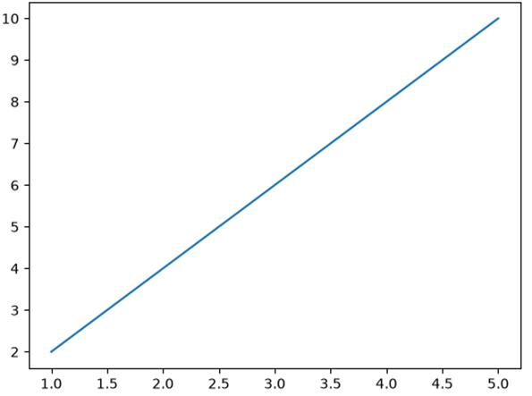
Figure 1: A simple line plot connecting 5 data points
figsize=(6, 3.5) sets the width and height of the figure in inches. Larger values = bigger plot.
2. Line Plots — Basic to Advanced
2.1 Your First Line Plot
A line plot connects data points with a straight line. It is perfect for showing how something changes over time.
import matplotlib.pyplot as plt
# Simple data
x = [1, 2, 3, 4, 5]
y = [10, 25, 18, 35, 30]
# Create figure and axes
fig, ax = plt.subplots(figsize=(6, 3.5))
# Plot the line
ax.plot(x, y)
# Add labels and title
ax.set_title("Basic Line Plot")
ax.set_xlabel("X-axis")
ax.set_ylabel("Y-axis")
plt.show()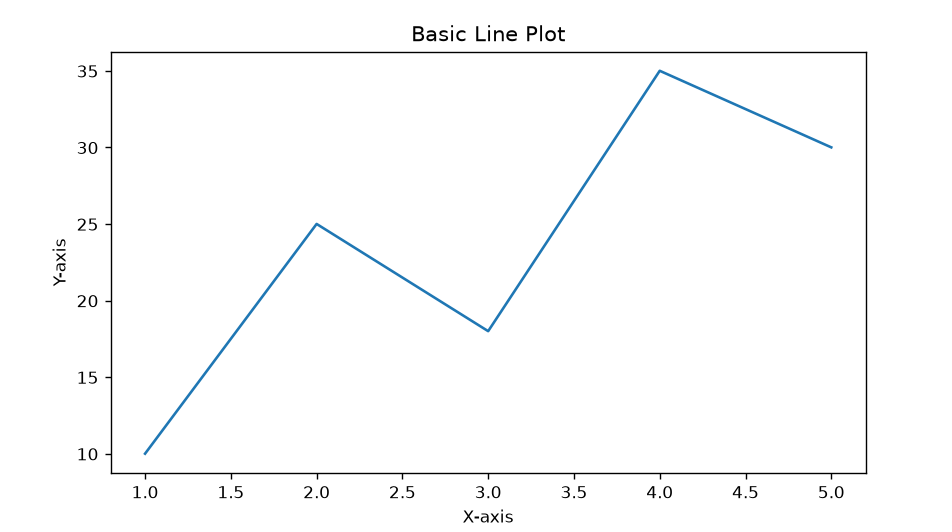
Figure 2: A basic line plot with title and labels
2.2 Styling the Line (Color, Width, Style, Markers)
You can customize every part of the line:
| Parameter | What It Controls | Example Values |
|---|---|---|
color | Line color | 'red', '#E63946', 'blue' |
linewidth (lw) | Thickness of line | 1, 2, 3.5 |
linestyle (ls) | Pattern of line | '-', '--', '-.', ':' |
marker | Symbol at each point | 'o', 's', '^', 'D', '*' |
markersize (ms) | Size of markers | 5, 8, 12 |
markerfacecolor | Fill color of marker | 'yellow', '#1D3557' |
markeredgecolor | Border color of marker | 'black', '#333' |
alpha | Transparency (0 to 1) | 0.5, 0.8, 1.0 |
label | Name for legend | 'Sales', 'Temperature' |
import matplotlib.pyplot as plt
x = [1, 2, 3, 4, 5, 6, 7]
y = [2, 4, 1, 5, 3, 7, 6]
fig, ax = plt.subplots(figsize=(6, 3.5))
ax.plot(x, y,
color='#E63946', # Red color
linewidth=2.5, # Thick line
linestyle='--', # Dashed line
marker='o', # Circle markers
markerfacecolor='#1D3557', # Dark navy fill
markersize=8) # Marker size
ax.set_title("Styled Line Plot", fontweight='bold')
ax.set_xlabel("Day")
ax.set_ylabel("Sales (units)")
ax.grid(True, alpha=0.3) # Light grid
plt.show()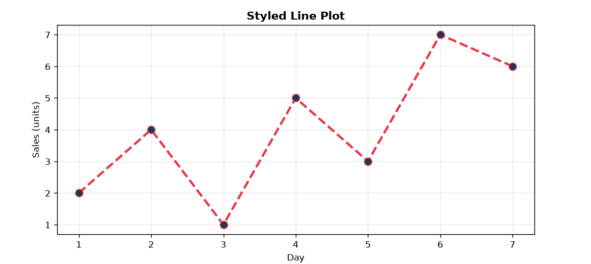
Figure 3: A styled line plot with custom colors, markers, and grid
2.3 Line Styles Reference
Here are all the line styles and marker styles you can use:
import matplotlib.pyplot as plt
# X-axis values
x = [0, 1, 2, 3, 4, 5, 6, 7, 8, 9, 10]
# Y-axis values for each line
y1 = [0, 1, 2, 3, 4, 5, 6, 7, 8, 9, 10]
y2 = [1, 2, 3, 4, 5, 6, 7, 8, 9, 10, 11]
y3 = [2, 3, 4, 5, 6, 7, 8, 9, 10, 11, 12]
y4 = [3, 4, 5, 6, 7, 8, 9, 10, 11, 12, 13]
y5 = [4, 5, 6, 7, 8, 9, 10, 11, 12, 13, 14]
# Draw a solid line
plt.plot(x, y1, linestyle='-', label='Solid (-)')
# Draw a dashed line
plt.plot(x, y2, linestyle='--', label='Dashed (--)')
# Draw a dash-dot line
plt.plot(x, y3, linestyle='-.', label='Dash-dot (-.)')
# Draw a dotted line
plt.plot(x, y4, linestyle=':', label='Dotted (:)')
# Draw another custom-style line
plt.plot(x, y5, linestyle=(0, (5, 1)), label='Custom')
# Add title
plt.title("Line Styles Reference")
# Show the labels of the lines
plt.legend()
# Show grid
plt.grid(True)
# Display the graph
plt.show()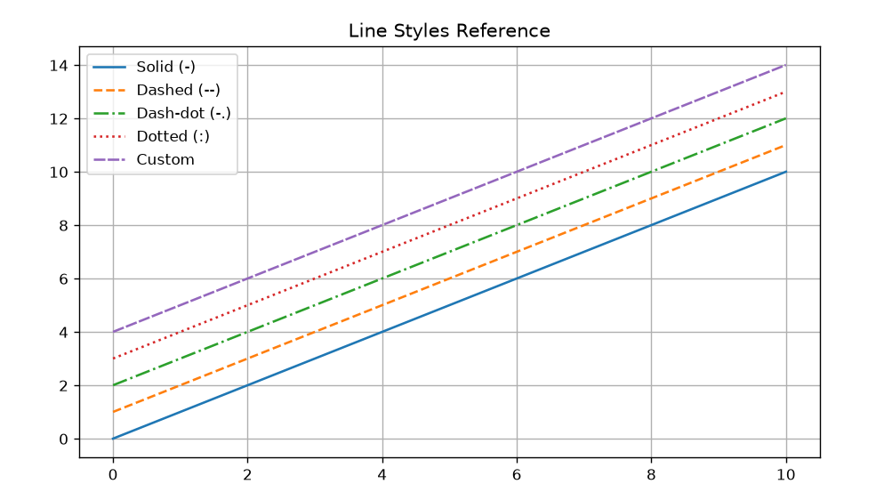
Figure 4: All major line styles in Matplotlib
2.4 Drawing the Sine Wave
import matplotlib.pyplot as plt
import math
# Create many X values
x = [i * 0.1 for i in range(101)]
# Calculate sine values
y = [math.sin(value) for value in x]
plt.plot(x, y, label='Dashed (--)', linestyle='--', color='green')
plt.title("Sine Wave")
plt.xlabel("X")
plt.ylabel("sin(X)")
plt.grid(True)
plt.legend()
plt.show()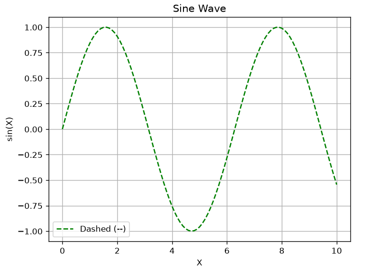
Figure 5: A sine wave plotted using Matplotlib
2.5 Marker Styles Reference
import matplotlib.pyplot as plt
# X-axis values
x = [1, 2, 3, 4, 5, 6, 7, 8]
# Different Y-axis values
y1 = [1, 2, 3, 4, 5, 6, 7, 8]
y2 = [2, 3, 4, 5, 6, 7, 8, 9]
y3 = [3, 4, 5, 6, 7, 8, 9, 10]
y4 = [4, 5, 6, 7, 8, 9, 10, 11]
y5 = [5, 6, 7, 8, 9, 10, 11, 12]
y6 = [6, 7, 8, 9, 10, 11, 12, 13]
# Circle marker
plt.plot(x, y1, c='blue', marker='o', markersize=8, label='Circle (o)')
# Square marker
plt.plot(x, y2, marker='s', markersize=8, label='Square (s)')
# Triangle marker
plt.plot(x, y3, marker='^', markersize=8, label='Triangle (^)')
# Diamond marker
plt.plot(x, y4, marker='D', markersize=8, label='Diamond (D)')
# Down triangle marker
plt.plot(x, y5, marker='v', markersize=8, label='Down Triangle (v)')
# Star marker
plt.plot(x, y6, marker='*', markersize=8, label='Star (*)')
plt.title("Marker Styles")
plt.legend()
plt.grid(True)
plt.show()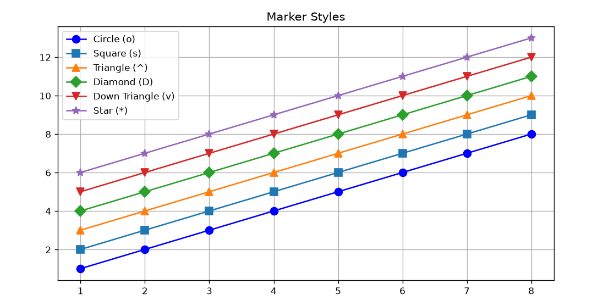
Figure 6: Common marker styles available in Matplotlib
2.6 Multiple Lines on One Plot
You can draw multiple lines on the same axes by calling plot() multiple times:
import matplotlib.pyplot as plt
months = ['Jan', 'Feb', 'Mar', 'Apr', 'May', 'Jun']
python_pop = [35, 38, 40, 45, 50, 55]
java_pop = [50, 48, 45, 42, 40, 38]
js_pop = [40, 42, 45, 48, 52, 58]
fig, ax = plt.subplots(figsize=(6, 3.5))
# Plot three lines
ax.plot(months, python_pop, 'o-', color='#3776AB', linewidth=2, label='Python')
ax.plot(months, java_pop, 's-', color='#E76F00', linewidth=2, label='Java')
ax.plot(months, js_pop, '^-', color='#F7DF1E', linewidth=2, label='JavaScript', markerfacecolor='#333', markeredgecolor='#F7DF1E')
ax.set_title("Programming Language Popularity", fontweight='bold')
ax.set_xlabel("Month")
ax.set_ylabel("Popularity (%)")
ax.legend() # Show legend with labels
ax.grid(True, alpha=0.3)
plt.show()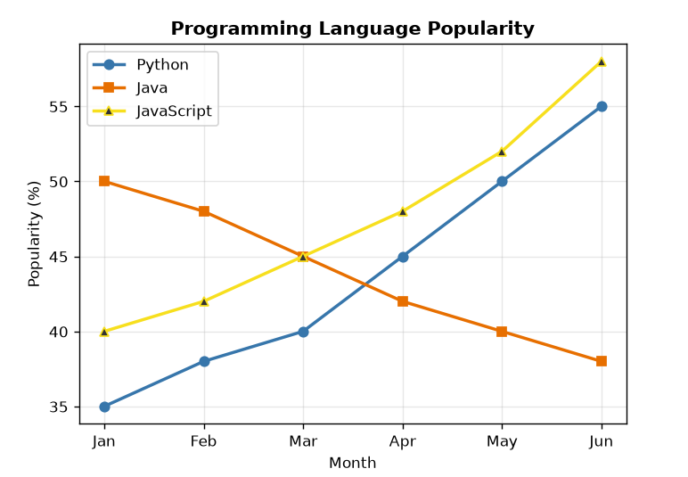
Figure 7: Three languages compared on the same plot
'o-' is a shortcut. 'o' = circle marker, '-' = solid line. So 's--' = square markers + dashed line, '^-.' = triangle + dash-dot line.
2.7 Adding Annotations
You can add text labels and arrows pointing to specific data points:
import matplotlib.pyplot as plt
# X-axis values
x = [0, 1, 2, 3, 4, 5, 6, 7, 8, 9]
# Calculate Y = X²
y = [0, 1, 4, 9, 16, 25, 36, 49, 64, 81]
# Draw the line with circle markers
plt.plot(x, y, 'o-', linewidth=2, markersize=6)
# Add text and arrow pointing to the maximum value
plt.annotate("Maximum = 81",
xy=(9, 81), # Point where arrow points
xytext=(5, 65), # Position of the text
arrowprops=dict(arrowstyle="->"))
# Add title
plt.title("Line Plot with Annotation")
# Add axis labels
plt.xlabel("X")
plt.ylabel("Y = X^2")
# Add grid
plt.grid(True)
# Display the graph
plt.show()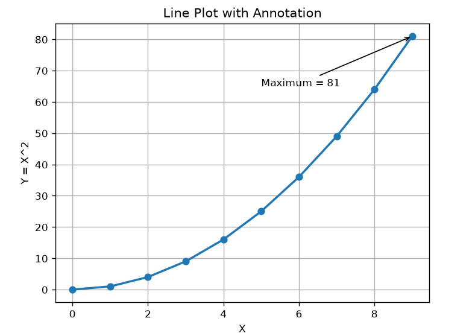
Figure 8: Annotation with arrow pointing to the maximum value
2.8 Sine and Cosine Curves
import matplotlib.pyplot as plt
import numpy as np
x = np.linspace(0, 2 * np.pi, 200) # 200 points from 0 to 2*pi
fig, ax = plt.subplots(figsize=(6, 3.5))
ax.plot(x, np.sin(x), color='#E63946', linewidth=2, label='sin(x)')
ax.plot(x, np.cos(x), color='#457B9D', linewidth=2, label='cos(x)')
# Reference lines
ax.axhline(y=0, color='gray', linewidth=1) # horizontal at y=0
ax.set_title("Sine and Cosine Curves", fontweight='bold')
ax.set_xlabel("Angle (radians)")
ax.set_ylabel("Value")
ax.legend()
ax.grid(True, alpha=0.3)
plt.show()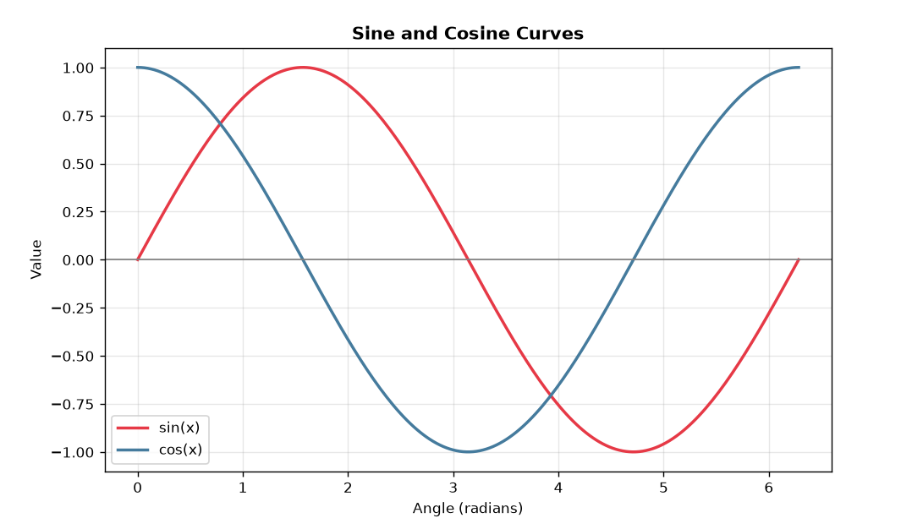
Figure 9: Sine and cosine functions plotted together
2.9 fill_between() — Shading Area Between Lines
import matplotlib.pyplot as plt
import numpy as np
x = np.linspace(0, 10, 100)
y1 = np.sin(x)
y2 = np.sin(x) + 0.5
fig, ax = plt.subplots(figsize=(6, 3.5))
ax.plot(x, y1, color='#1D3557', linewidth=2, label='Lower Bound')
ax.plot(x, y2, color='#E63946', linewidth=2, label='Upper Bound')
ax.fill_between(x, y1, y2, alpha=0.3, color='#A8DADC') # Shade the gap
ax.set_title("Line Plot with fill_between()", fontweight='bold')
ax.set_xlabel("X")
ax.set_ylabel("Y")
ax.legend()
ax.grid(True, alpha=0.3)
plt.show()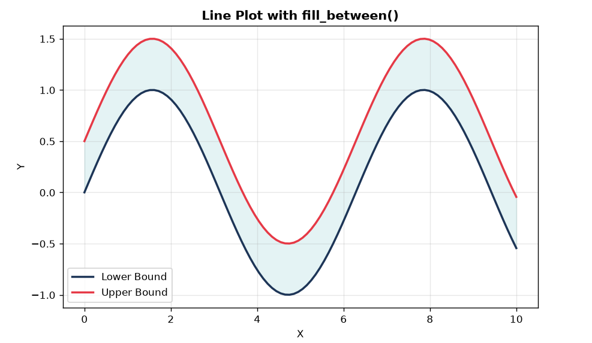
Figure 10: Shaded area between two curves using fill_between()
2.10 Important Line Plot Functions — Quick Reference
| Function | What It Does | Example |
|---|---|---|
ax.plot(x, y) | Draw a line plot | ax.plot([1,2], [3,4]) |
ax.set_title() | Set plot title | ax.set_title('My Plot') |
ax.set_xlabel() | Label for x-axis | ax.set_xlabel('Time') |
ax.set_ylabel() | Label for y-axis | ax.set_ylabel('Value') |
ax.legend() | Show legend box | ax.legend(loc='upper left') |
ax.grid() | Show/hide grid lines | ax.grid(True, alpha=0.3) |
ax.set_xlim() | Set x-axis range | ax.set_xlim(0, 10) |
ax.set_ylim() | Set y-axis range | ax.set_ylim(-1, 1) |
ax.axhline() | Horizontal reference line | ax.axhline(y=0) |
ax.axvline() | Vertical reference line | ax.axvline(x=5) |
ax.annotate() | Add text with arrow | ax.annotate('Max', ...) |
3. Subplots
3.1 What are Subplots?
Sometimes you want to show multiple plots side by side in a single figure. Each individual plot is called a subplot. Matplotlib makes this very easy.
Think of it like this: A figure is a page, and subplots are the graphs arranged on that page in a grid pattern (rows x columns).
3.2 plt.subplots() — Creating Subplots
nrows = number of rows of plots
ncols = number of columns of plots
figsize = (width, height) in inches
3.3 Two Subplots Side by Side
import matplotlib.pyplot as plt
import numpy as np
x = np.linspace(0, 10, 50)
# Create 1 row, 2 columns of subplots
fig, (ax1, ax2) = plt.subplots(1, 2, figsize=(8, 3.5))
# First subplot
ax1.plot(x, np.sin(x), color='#E63946', linewidth=2)
ax1.set_title("sin(x)", fontweight='bold')
ax1.grid(True, alpha=0.3)
# Second subplot
ax2.plot(x, np.cos(x), color='#457B9D', linewidth=2)
ax2.set_title("cos(x)", fontweight='bold')
ax2.grid(True, alpha=0.3)
fig.suptitle("Two Subplots Side by Side", fontweight='bold', fontsize=13)
fig.tight_layout() # Prevents overlapping
plt.show()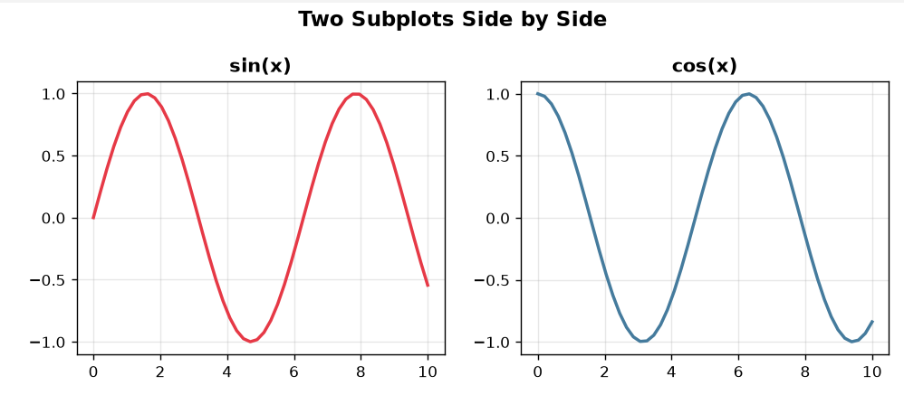
Figure 11: Two subplots side by side
fig.tight_layout() before plt.show(). It automatically adjusts spacing so that titles and labels don't overlap.
3.4 2x2 Grid of Subplots
When you create a grid of subplots, the axes variable becomes a 2D array. You access each subplot using axes[row, col].
import matplotlib.pyplot as plt
import numpy as np
x = np.linspace(0, 2*np.pi, 100)
# Create 2 rows, 2 columns
fig, axes = plt.subplots(2, 2, figsize=(8, 6))
# Top-left: axes[0, 0]
axes[0, 0].plot(x, np.sin(x), color='#E63946', linewidth=0.5, linestyle='--', marker='s', markersize=2)
axes[0, 0].set_title("sin(x)")
axes[0, 0].grid(True, alpha=0.3)
# Top-right: axes[0, 1]
axes[0, 1].plot(x, np.cos(x), color='#457B9D', linewidth=2)
axes[0, 1].set_title("cos(x)")
axes[0, 1].grid(True, alpha=0.3)
# Bottom-left: axes[1, 0]
axes[1, 0].plot(x, x**3, color='#2A9D8F', linewidth=2)
axes[1, 0].set_title("x^3")
axes[1, 0].set_ylim(0, 100)
axes[1, 0].grid(True, alpha=0.3)
# Bottom-right: axes[1, 1]
axes[1, 1].plot(x, np.sin(x)**2, color='#E9C46A', linewidth=2)
axes[1, 1].set_title("sin squared(x)")
axes[1, 1].grid(True, alpha=0.3)
fig.suptitle("2x2 Grid of Subplots", fontweight='bold')
fig.tight_layout()
plt.show()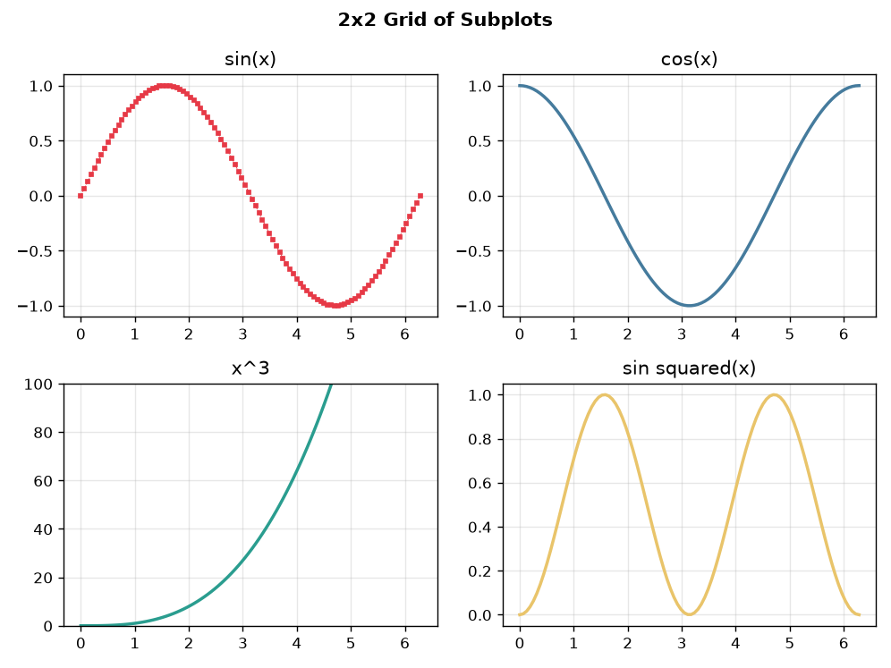
Figure 12: Four plots arranged in a 2x2 grid
axes[row, col] indexing:axes[0, 0] = top-leftaxes[0, 1] = top-rightaxes[1, 0] = bottom-leftaxes[1, 1] = bottom-right
3.5 Subplots with Shared Axes
When comparing related data, it helps to share the same x-axis or y-axis across subplots:
import matplotlib.pyplot as plt
import numpy as np
x = np.linspace(0, 4*np.pi, 200)
# sharex=True means all subplots share the same x-axis
fig, (ax1, ax2, ax3) = plt.subplots(3, 1, figsize=(6, 6), sharex=True)
ax1.plot(x, np.sin(x), color='#E63946', linewidth=2)
ax1.set_ylabel("sin(x)")
ax1.grid(True, alpha=0.3)
ax2.plot(x, np.sin(2*x), color='#457B9D', linewidth=2)
ax2.set_ylabel("sin(2x)")
ax2.grid(True, alpha=0.3)
ax3.plot(x, np.sin(3*x), color='#2A9D8F', linewidth=2)
ax3.set_ylabel("sin(3x)")
ax3.set_xlabel("x (radians)")
ax3.grid(True, alpha=0.3)
fig.suptitle("Subplots with Shared X-Axis", fontweight='bold', fontsize=14)
fig.tight_layout()
plt.show()
Figure 13: Three vertically stacked plots sharing the same x-axis
3.7 Subplot Methods Reference
| Function / Parameter | What It Does | Example |
|---|---|---|
plt.subplots(r, c) | Create r rows x c cols grid | fig, axes = plt.subplots(2, 3) |
figsize=(w, h) | Set figure size in inches | plt.subplots(figsize=(10, 6)) |
sharex=True | Share x-axis across subplots | plt.subplots(3, 1, sharex=True) |
sharey=True | Share y-axis across subplots | plt.subplots(1, 3, sharey=True) |
fig.suptitle() | Title for entire figure | fig.suptitle('Main Title') |
fig.tight_layout() | Auto-fix spacing | fig.tight_layout() |
GridSpec(r, c) | Custom grid layout | gs = GridSpec(2, 2) |
height_ratios | Relative heights of rows | GridSpec(2,1, height_ratios=[2,1]) |
width_ratios | Relative widths of cols | GridSpec(1,2, width_ratios=[3,1]) |
fig.add_subplot(gs) | Add subplot from GridSpec | ax = fig.add_subplot(gs[0,:]) |
plt.savefig() | Save entire figure | plt.savefig('subplots.png') |
4. Seaborn Line Plots
4.1 Seaborn Basics
Seaborn's lineplot() function is more powerful than Matplotlib's plot.
data = a Pandas DataFrame
hue = column name to color-code different groups
style = column name to vary line style
markers = True to show markers
4.2 Seaborn Themes
Seaborn comes with built-in themes that instantly make your plots look professional:
| Theme | Description | Code |
|---|---|---|
| whitegrid | White background + grid lines | sns.set_theme(style="whitegrid") |
| darkgrid | Gray background + grid (default) | sns.set_theme(style="darkgrid") |
| white | Clean white background | sns.set_theme(style="white") |
| dark | Gray background, no grid | sns.set_theme(style="dark") |
| ticks | White background + tick marks | sns.set_theme(style="ticks") |
4.3 Seaborn Line Plot with Grouped Data
import matplotlib.pyplot as plt
import seaborn as sns
sns.set_theme(style="whitegrid")
# Create data manually
months = ['Jan', 'Feb', 'Mar', 'Apr', 'May', 'Jun']
sales = [20, 35, 30, 45, 50, 65]
# Create the graph
sns.lineplot(x=months, y=sales,
marker='o', # Circle marker
markersize=20, # for marker size
linewidth=1.5, # for line width
color='blue', # for line color
markerfacecolor='red') # for marker face color
plt.title("Sales by Month", fontweight='bold')
plt.xlabel("Month")
plt.ylabel("Sales")
plt.show()
Figure 14: Sales trends color-coded using Seaborn
4.4 Seaborn Color Palette
A color palette in Seaborn is a collection of colors used to automatically give different colors to different elements of a graph, such as lines, bars, or points.
What is its use?
- Give different colors to multiple data series.
- Make graphs more attractive and readable.
- Make it easier to distinguish between different categories.
import matplotlib.pyplot as plt
import seaborn as sns
# Set graph theme
sns.set_theme(style="whitegrid")
# Seaborn Color Palettes
sns.set_palette("deep") # Deep colors
# sns.set_palette("muted") # Soft/muted colors
# sns.set_palette("bright") # Bright colors
# sns.set_palette("pastel") # Light/pastel colors
# sns.set_palette("dark") # Dark colors
# sns.set_palette("colorblind") # Colorblind-friendly colors
# Create data manually
months = ['Jan', 'Feb', 'Mar', 'Apr', 'May', 'Jun']
sales1 = [20, 35, 30, 45, 50, 65]
sales2 = [15, 25, 35, 40, 55, 60]
# Create the graph
sns.lineplot(x=months, y=sales1, marker='o', markersize=8, linewidth=2, label="North")
sns.lineplot(x=months, y=sales2, marker='s', markersize=8, linewidth=2, label="South")
# Labels and title
plt.title("Sales by Region", fontweight='bold')
plt.xlabel("Month")
plt.ylabel("Sales")
plt.legend(title="Region")
plt.show()
Figure 15: Sales by Region using Seaborn color palettes
4.5 Advanced: Seaborn + Subplots Combined
import matplotlib.pyplot as plt
import seaborn as sns
sns.set_theme(style="darkgrid")
fig, axes = plt.subplots(1, 3, figsize=(12, 4))
# --- Subplot 1: Stock Trend ---
days = [1, 2, 3, 4, 5, 6]
price = [20, 22, 21, 25, 27, 30]
axes[0].plot(days, price, 'o-', color='red')
axes[0].fill_between(days, price, alpha=0.2)
axes[0].set_title("Stock Trend")
axes[0].set_xlabel("Day")
axes[0].set_ylabel("Price")
# --- Subplot 2: Model Comparison ---
epochs = [1, 2, 3, 4, 5]
model_A = [50, 60, 65, 72, 78]
model_B = [45, 55, 63, 70, 75]
model_C = [40, 52, 60, 68, 73]
axes[1].plot(epochs, model_A, marker='o', label="Model A")
axes[1].plot(epochs, model_B, marker='s', label="Model B")
axes[1].plot(epochs, model_C, marker='^', label="Model C")
axes[1].set_title("Model Comparison")
axes[1].set_xlabel("Epoch")
axes[1].set_ylabel("Accuracy")
axes[1].legend()
# --- Subplot 3: Signal ---
time = [1, 2, 3, 4, 5, 6]
signal_A = [10, 15, 13, 20, 18, 25]
signal_B = [8, 12, 16, 14, 22, 24]
sns.lineplot(x=time, y=signal_A, marker='o', label="Event A", ax=axes[2])
sns.lineplot(x=time, y=signal_B, marker='s', label="Event B", ax=axes[2])
axes[2].set_title("Signal Comparison")
axes[2].set_xlabel("Time")
axes[2].set_ylabel("Signal")
axes[2].legend()
# Main title
fig.suptitle("Multiple Subplots with Seaborn", fontweight='bold')
fig.tight_layout()
plt.show()
Figure 16: Three different visualizations combined in one figure
5. Practice Programs
import matplotlib.pyplot as plt
# Weekly temperature data
days = ['Mon', 'Tue', 'Wed', 'Thu', 'Fri', 'Sat', 'Sun']
max_temp = [32, 35, 33, 36, 38, 37, 34]
min_temp = [22, 24, 23, 25, 27, 26, 24]
fig, ax = plt.subplots(figsize=(7, 4))
ax.plot(days, max_temp, 'o-', color='#E63946', linewidth=2, markersize=8, label='Max Temp')
ax.plot(days, min_temp, 's-', color='#457B9D', linewidth=2, markersize=8, label='Min Temp')
ax.fill_between(days, min_temp, max_temp, alpha=0.15, color='#A8DADC')
ax.set_title("Weekly Temperature Report", fontweight='bold', fontsize=14)
ax.set_xlabel("Day of Week")
ax.set_ylabel("Temperature (Celsius)")
ax.legend()
ax.grid(True, alpha=0.3)
fig.tight_layout()
plt.savefig("temperature_report.png", dpi=150)
plt.show()
Figure 17: Temperature report with shaded area between min and max
import matplotlib.pyplot as plt
import numpy as np
subjects = ['Math', 'Science', 'English', 'Hindi', 'Computer']
student1 = [85, 92, 78, 88, 95]
student2 = [90, 75, 85, 82, 88]
student3 = [78, 88, 92, 76, 90]
fig, axes = plt.subplots(1, 3, figsize=(14, 4), sharey=True)
# Student 1
axes[0].plot(subjects, student1, 'o-', color='#E63946', linewidth=2, markersize=8)
axes[0].fill_between(subjects, student1, alpha=0.1, color='#E63946')
axes[0].set_title("Rahul's Marks", fontweight='bold')
axes[0].set_ylim(60, 100)
axes[0].grid(True, alpha=0.3)
# Student 2
axes[1].plot(subjects, student2, 's-', color='#457B9D', linewidth=2, markersize=8)
axes[1].fill_between(subjects, student2, alpha=0.1, color='#457B9D')
axes[1].set_title("Priya's Marks", fontweight='bold')
axes[1].grid(True, alpha=0.3)
# Student 3
axes[2].plot(subjects, student3, '^-', color='#2A9D8F', linewidth=2, markersize=8)
axes[2].fill_between(subjects, student3, alpha=0.1, color='#2A9D8F')
axes[2].set_title("Amit's Marks", fontweight='bold')
axes[2].grid(True, alpha=0.3)
fig.suptitle("Student Marks Dashboard", fontweight='bold', fontsize=15)
fig.tight_layout()
plt.show()
Figure 18: Three students' marks compared across subjects
Line Plot Parameters Reference
| Parameter | Values | Example |
|---|---|---|
color / c | 'red', '#E63946', (0.5,0,0) | color='#E63946' |
linewidth / lw | 1, 2, 3.5 | linewidth=2.5 |
linestyle / ls | '-', '--', '-.', ':' | linestyle='--' |
marker | 'o', 's', '^', 'D', '*', 'v', 'p', 'X' | marker='o' |
markersize / ms | 5, 8, 12 | markersize=8 |
markerfacecolor | Any color | markerfacecolor='yellow' |
alpha | 0.0 to 1.0 | alpha=0.7 |
label | Any string | label='Sales' |
Creating Subplots
| Code Pattern | Result |
|---|---|
fig, ax = plt.subplots() | 1 figure, 1 plot |
fig, (ax1, ax2) = plt.subplots(1, 2) | 1 row, 2 columns |
fig, axes = plt.subplots(2, 2) | 2x2 grid (use axes[r,c]) |
fig, axes = plt.subplots(3, 1, sharex=True) | 3 rows sharing x-axis |
Saving Plots
| Code | What It Does |
|---|---|
plt.savefig('plot.png') | Save as PNG |
plt.savefig('plot.png', dpi=300) | High resolution PNG |
plt.savefig('plot.pdf') | Save as PDF (vector) |
plt.savefig('plot.svg') | Save as SVG (vector) |
plt.savefig('plot.jpg', quality=95) | Save as JPEG |
plt.savefig('p.png', bbox_inches='tight') | Remove whitespace borders |